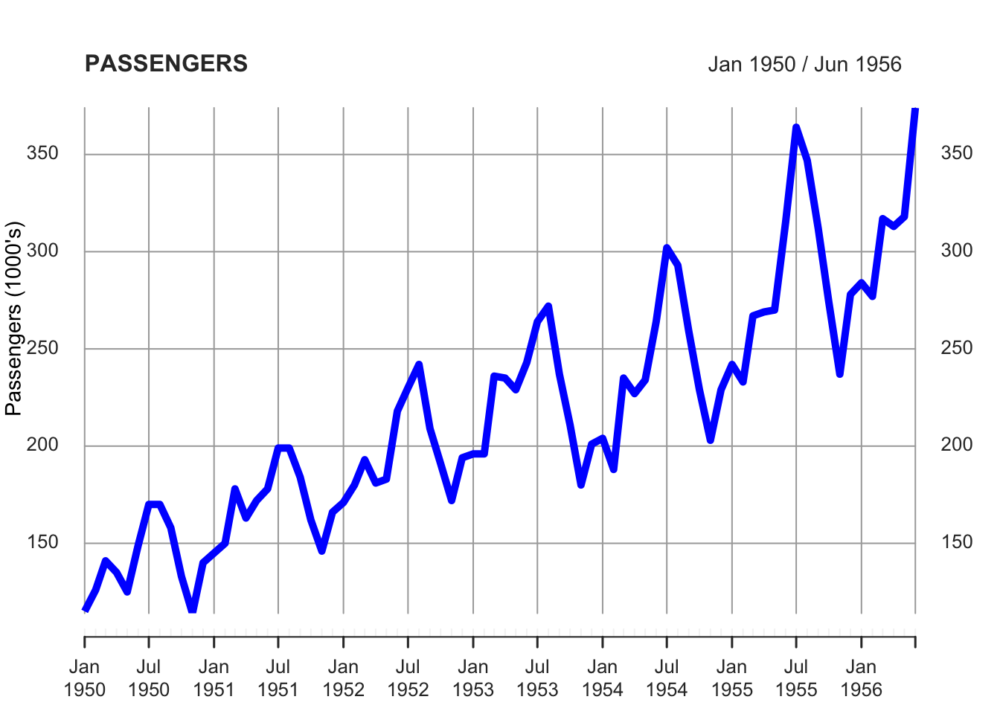
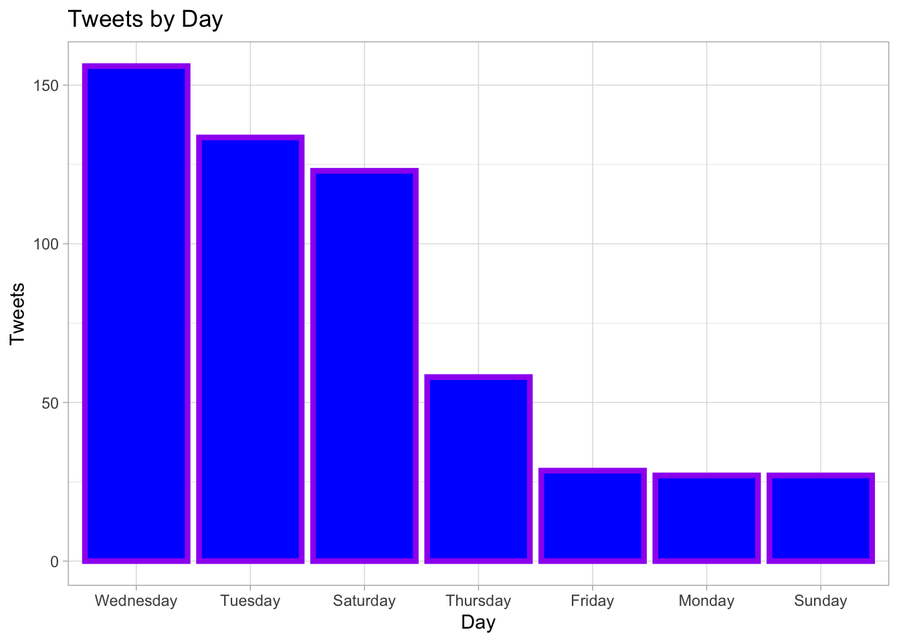

Chapter 3 Tidyverse
The library tidyverse is composed of functions that allow the users to perform fundamental and advanced data science operations. In this course we are particularly interested in its use to manipulate data.frames and create plots.
Tidyverse has a peculiar syntax which allows users to concatenate many operations through the so-called “pipe”, that is, the following symbol: %>%
In this example, we use tidyverse to add another variable to the data.frame by using the function “mutate”.
First we write the name of the object we want to create (we could keep the same name of the object we want to modify, but to be more clear we create a new object. Then, after the arrow, we write the name of the object we want to modify and the %>% symbol, which precede the operation we are going to do with that object.
To mutate the data.frame we use the function mutate(). Its first argument is the name of the new variable we want to create, and then the operation that creates it. In this case we create the new variable as the third variable divided by three.
library(tidyverse)
new_dataframe <- object_consisting_in_a_dataframe %>%
mutate(just_another_new_variable = a_new_variable / 3)
new_dataframe## first_variable second_variable a_new_variable just_another_new_variable
## 1 1 Monday 12 4.000000
## 2 2 Tuesday 261 87.000000
## 3 3 Wednesday 45 15.000000
## 4 4 Thursday 29 9.666667
## 5 5 Friday 54 18.000000
## 6 6 Saturday 234 78.000000
## 7 7 Sunday 45 15.000000
## 8 8 Monday 42 14.000000
## 9 9 Tuesday 6 2.000000
## 10 10 Wednesday 267 89.000000
## 11 11 Thursday 87 29.000000
## 12 12 Friday 3 1.000000
## 13 13 Saturday 12 4.000000
## 14 14 Sunday 9 3.000000To make the example more meaningful, we will suppose that the first variable represents the IDs of the dataset entries, the second variable represents the days of obseravation, the third the number of tweets published that day, and the fourth the number of users that published the tweets. We rename the columns accordingly.
new_dataframe <- new_dataframe %>%
rename("ID" = first_variable,
"Day" = second_variable,
"Tweets" = a_new_variable,
"Users" = just_another_new_variable)
new_dataframe## ID Day Tweets Users
## 1 1 Monday 12 4.000000
## 2 2 Tuesday 261 87.000000
## 3 3 Wednesday 45 15.000000
## 4 4 Thursday 29 9.666667
## 5 5 Friday 54 18.000000
## 6 6 Saturday 234 78.000000
## 7 7 Sunday 45 15.000000
## 8 8 Monday 42 14.000000
## 9 9 Tuesday 6 2.000000
## 10 10 Wednesday 267 89.000000
## 11 11 Thursday 87 29.000000
## 12 12 Friday 3 1.000000
## 13 13 Saturday 12 4.000000
## 14 14 Sunday 9 3.000000We also change the format of the values Tweets and Users, which are now of type “double”, to “integer”. The format “double” is suitable for continuous variables more that count data like the one we are supposing to use. WE also change the format of the ID column to characters, since it represents just a label. We use, again, the function “mutate”.
new_dataframe <- new_dataframe %>%
mutate(ID = as.character(ID),
Tweets = as.integer(Tweets),
Users = as.integer(Users))
new_dataframe## ID Day Tweets Users
## 1 1 Monday 12 4
## 2 2 Tuesday 261 87
## 3 3 Wednesday 45 15
## 4 4 Thursday 29 9
## 5 5 Friday 54 18
## 6 6 Saturday 234 78
## 7 7 Sunday 45 15
## 8 8 Monday 42 14
## 9 9 Tuesday 6 2
## 10 10 Wednesday 267 89
## 11 11 Thursday 87 29
## 12 12 Friday 3 1
## 13 13 Saturday 12 4
## 14 14 Sunday 9 3Now we summarize the data. For instance, we could be interested in calcuating the average numer of tweets and users by day. Thus, we aggregate the data by Day (by using the function “group_by”) and then we use the function “summarize” to calculate the average values of Tweets and Users by Day. To calculate the average values we use the function “mean”. We also order the data from the day with the highest to the lowest number of tweets, by using the function “arrange”.
summary_data <- new_dataframe %>%
group_by(Day) %>%
summarize(average_tweets = mean(Tweets),
average_users = mean(Users)) %>%
arrange(-average_tweets)## `summarise()` ungrouping output (override with `.groups` argument)## # A tibble: 7 x 3
## Day average_tweets average_users
## <fct> <dbl> <dbl>
## 1 Wednesday 156 52
## 2 Tuesday 134. 44.5
## 3 Saturday 123 41
## 4 Thursday 58 19
## 5 Friday 28.5 9.5
## 6 Monday 27 9
## 7 Sunday 27 9We can plot the results of our summary by using a bar plot. The main graphical function in tidyverse is ggplot.

The plot results not ordered by the numer of tweets. We can order it by using another function (“reorder”) inside the code. We also give new colors to the bars. We also change the axis labels, give a title to the plot, and use a pre-existing theme to give a better aspect to the whole picture.
ggplot(summary_data, aes(x=reorder(Day, -average_tweets), y=average_tweets)) +
geom_col(fill="blue", col="purple", size=1.5) +
xlab("Day") +
ylab("Tweets") +
ggtitle("Tweets by Day") +
theme_light()